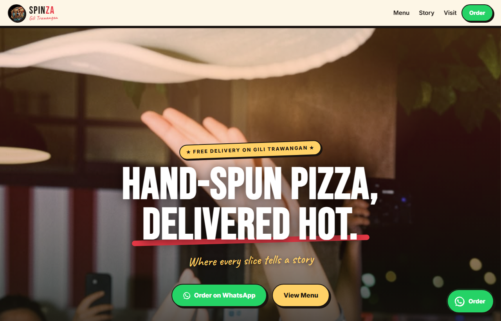

SpinZa Pizza Website
Date: 2026 · Role: Web Design & Development

Overview
I built this website for SpinZa, a small pizza company on Gili Trawangan, a little island in Indonesia. They make hand-spun NY-style pizza and wanted a way to bring in more business, so I designed and built them a fast, mobile-first site from scratch to show off their menu and make ordering dead simple.
Ordering Through WhatsApp
Almost all food ordering on the island happens over WhatsApp, so instead of building a whole checkout system I leaned into how people there already order. Every "Order" button drops the customer straight into a WhatsApp chat with a pre-filled message asking for their name and location. It keeps things simple for the owners and removes basically all the friction for the customer.
Menu & Brand
I built the whole thing around their tagline, "where every slice tells a story," and gave it a bold, hand-spun look to match. The menu is split into tabs — pizza, sandwiches, calzone, and panzerotto — and is driven by a small data file, so they can update items and prices without ever touching the design. Everything is mobile-first, since nearly all of their customers are ordering from a phone. Check out the website here -> https://spinzapizza.netlify.app/